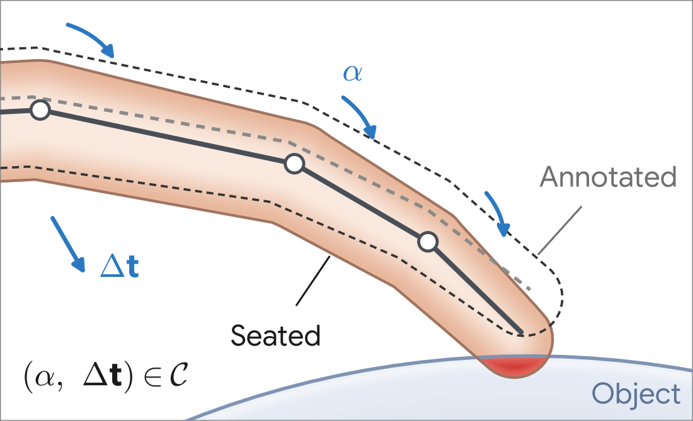
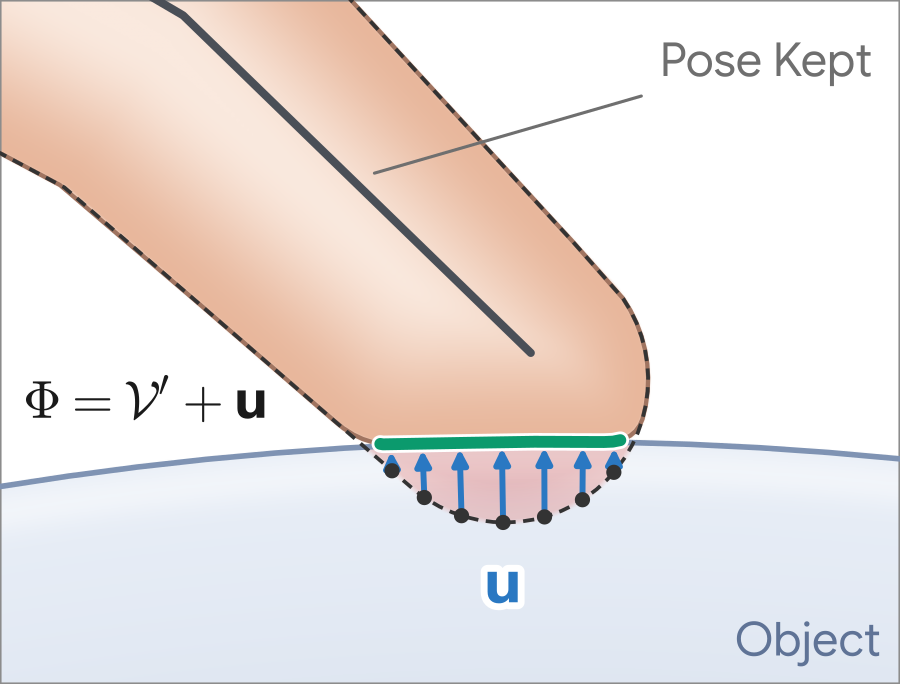
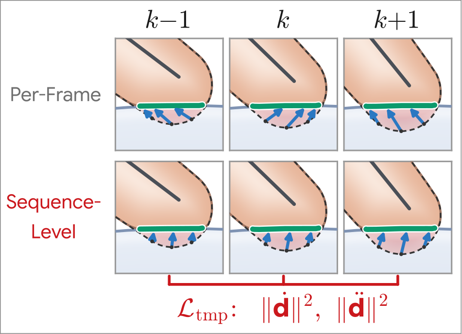

Stage 1
Kinematic seating
The joints and wrist adjust slightly so that each finger reaches the object and presses lightly into it.
Deforming Skin into Contact-Consistent Hand Meshes
Korea Electronics Technology Institute (KETI)
TL;DR. Rigid hand meshes in datasets and estimators hover above or penetrate objects. Since this stems from the rigid skin rather than the pose, we lift these hands to contact-consistent meshes in three stages: (i) kinematic seating places the fingers on the object, (ii) skin deformation conforms the skin to its surface, and (iii) a temporal prior maintains consistent contact across frames. This yields more stable grasps over time.
Lifting a dataset annotation
From the rigid annotation to its lift. Estimated hands and clips follow in Results below.

The joints and wrist adjust slightly so that each finger reaches the object and presses lightly into it.

With the pose fixed, the skin deforms so that penetrating regions settle onto the surface without stretching.

All frames of a clip are optimized jointly, which keeps the contact patch stable over time.
Existing refiners adjust the pose, which moves the hand away from the estimate yet leaves less skin on the object. Our lift instead keeps the estimated pose and deforms the skin onto the surface.
Refinement of each estimator's predictions on DexYCB.
Geometry alone misses contact where an estimated finger stops short of the object. A lightweight head trained on lifted annotations predicts where the skin should touch, and guiding the lift with it closes these gaps and improves grasp stability.
Geometry alone versus the learned head on DexYCB.
Thermal imprints record where a real hand touched the object. The lift recovers contact that the rigid annotation misses without sacrificing precision, a gain that neither a larger rigid contact nor pose refinement achieves.
Agreement with thermal contact on 1,766 ContactPose grasps.
Lifting each frame independently makes the skin flicker even when the grasp barely changes. The temporal prior couples the frames of a clip, so each indentation persists as the fingers move while the skin stays on the object.
Frame-to-frame change of the deformation
Temporal consistency and contact on held-out clips.
@article{park2026beyond,
title = {Beyond Rigid Hands: Deforming Skin into Contact-Consistent Hand Meshes},
author = {Park, Seonghwan and Park, Min-Gyu},
journal = {arXiv preprint arXiv:2611.31950},
year = {2026}
}